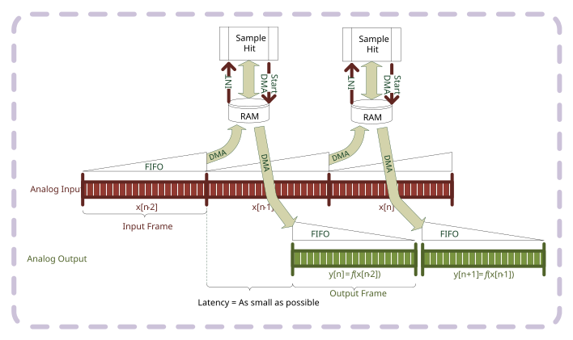
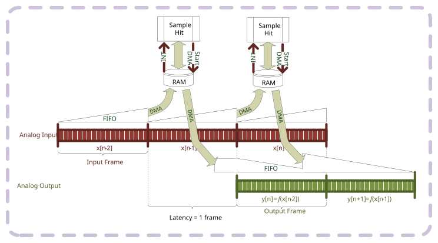
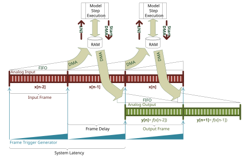
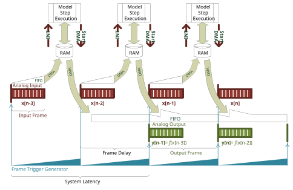
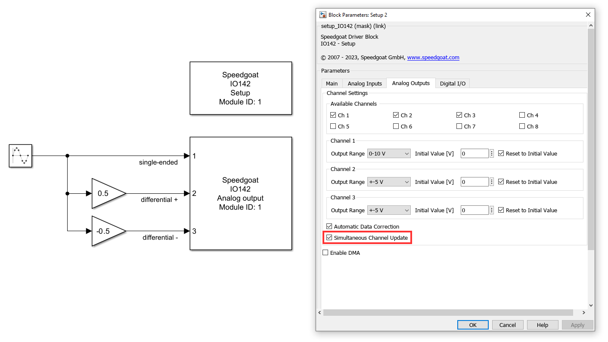

IO142 Usage Notes — Usage information about the I/O module
The IO142 is generally considered to use sequential sampling, as the individual ADCs sample the channels successively. To achieve simultaneous sampling, the analog input block can be configured to only use one channel per ADC, eg. the first Channel from Input Group 1, the first Channel from Input Group 2, the first Channel from Input Group 3, and the first Channel from Input Group 4.
If DMA is enabled for analog input, analog output or both, then the model or the asynchronous subsystem where the module is located must be triggered by the module's interrupt.
This is required so that the sample hits of the blocks are synchronous to the module's DMA engine.
In DMA mode, the model must contain an Interrupt Setup block that triggers a subsystem or the model. Refer to the block documentation for more information.
This note shows the difference between the two configuration options for the latency of the Analog output block in DMA mode.
The configuration is defined in the analog output tab of the Setup block.
Latency as small as possible
If the latency is kept as small as possible, then the module will start to output values immediately after receiving a frame. However, the transmission time will vary, meaning that the delay between the sample hit of the model and the change at the output pins is not constant. If both the analog input and output use DMA, then the latency between measuring a value, processing and writing the value to the output will vary.
If the DMA transfer, during one sample hit, requires more time than the previous transfer, then the outputs will remain on the last value until the transfer has finished.

Latency until next frame
If the latency is fixed to the beginning of the next frame, then the analog outputs will only start to output the data of the frame at the next sample hit. The delay between the sample hit and the outputs, or between the analog inputs and the analog outputs is therefore constant. There is no danger of running out of data at the outputs, however, the latency will be higher.

The frame trigger starts the conversion of analog input or output data over DMA. The advantage of operating with the frame trigger is that the data frame can be smaller than the trigger signal and the analog input and output frames can be of different sizes. Without the frame trigger, it is still possible to have different sample times for the input and output, but they must complete their frames at the same time.
The disadvantage of the frame trigger is that different conversion clocks cannot be used for the analog input and output.
Example: Input and output frames are the same size as the frame trigger
In this example, the analog input and output frames have the same size as the frame trigger. If the analog input frame size and analog output frame size are both 100 samples/channel, then the frame trigger clock divider must be 100. This results in a frame trigger with 100 conversions/trigger. With these settings, the IO142 I/O module performs the analog conversions at an interval defined with the chosen conversion clock.
When using the frame trigger, the frames are always synchronized. Consequently, the analog input and output have to use the same conversion clock. The system latency is therefore double the time of one frame.

Example: Input and output frames are smaller than the frame trigger
In this example, the analog input and output frames are smaller than the frame trigger. The analog input frame size could, for example, be 40 samples/channel, the analog output frame size could be 60 samples/channel and the frame trigger clock divider could be 100. The result is a configuration where the system starts converting both the analog input and output samples after a frame trigger. After 40 samples, the analog input frame is full, the ADC conversions are stopped and the data frame is transferred over DMA to the model in Simulink. For the next 20 conversion clocks, the module will continue to update the analog outputs until the output frame has also finished. During the last 40 conversion clocks, the module will not perform anymore conversions. It may however load the next output frame over DMA. The whole cycle will start again after the next frame trigger.
When using the frame trigger, the frames are always synchronized. Consequently, the analog input and output have to use the same conversion clock. The system latency is therefore double the time of one frame. Shorter latencies cannot be guaranteed for every configuration.

Analog I/O modules with single-ended outputs and simultaneous channel update functionality can support differential output signals. Two single-ended channels are needed to output one differential signal, and the Simultaneous Channel Update setting must be enabled. The following screenshot illustrates one way in which you can implement differential signals over single-ended channels in Simulink. Ensure that the voltage ranges configured are compatible with the output signals.
